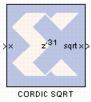

|
|
The Xilinx CORDIC SQRT reference block implements a square root circuit using a fully parallel CORDIC (COordinate Rotation DIgital Computer) algorithm in Hyperbolic Vectoring mode.That is, given input x, it computes the output sqrt (x). The CORDIC processor is implemented using building blocks from the Xilinx blockset.The square root is calculated indirectly by the CORDIC algorithm by applying the identity listed as follows. sqrt (w) = sqrt { (w + 0.25)2 - (w - 0.25)2 }